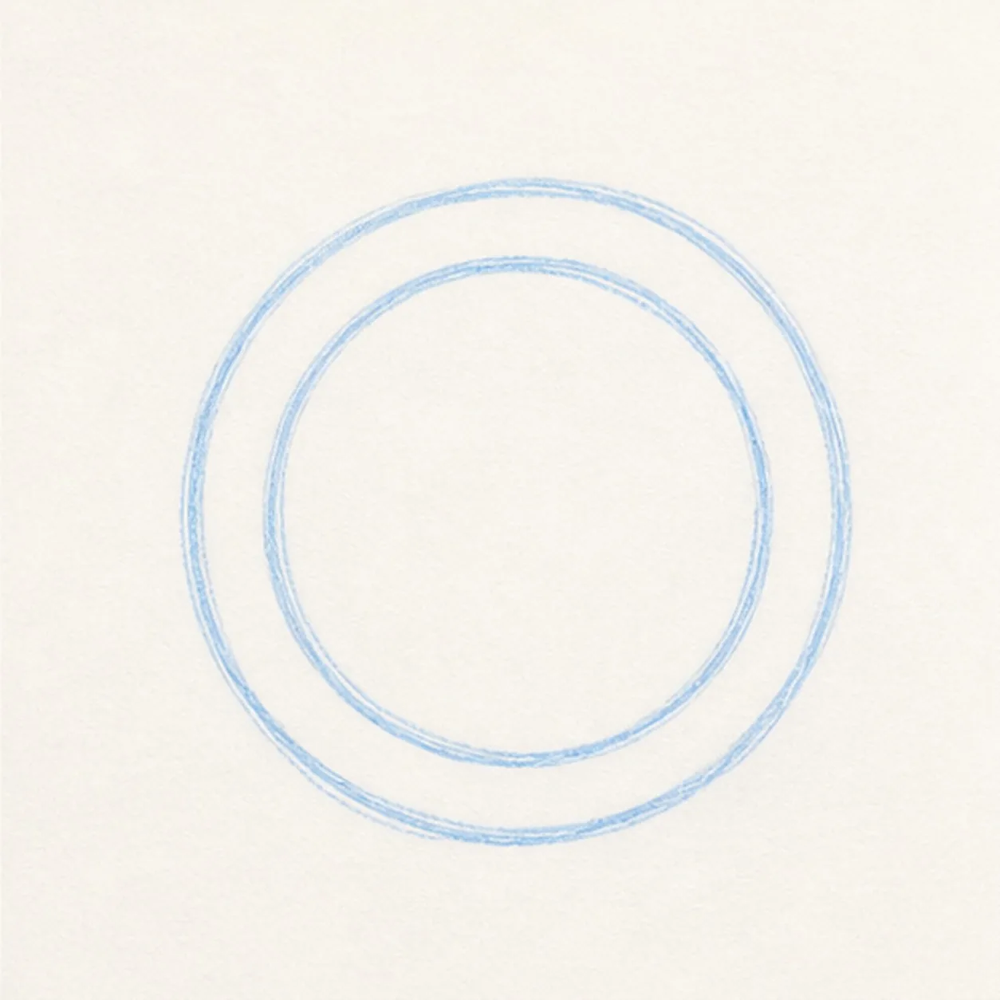
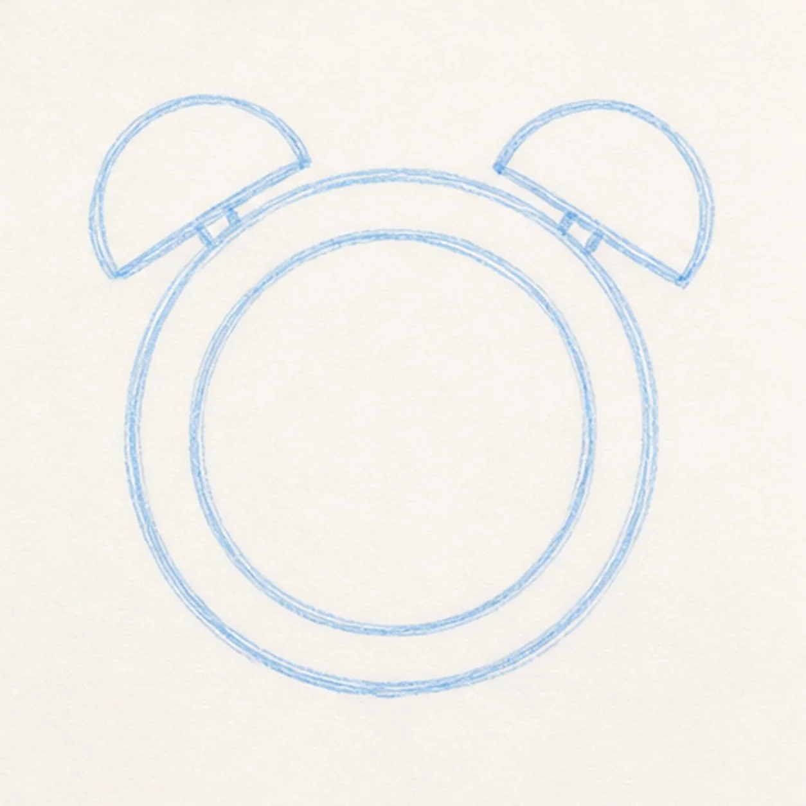
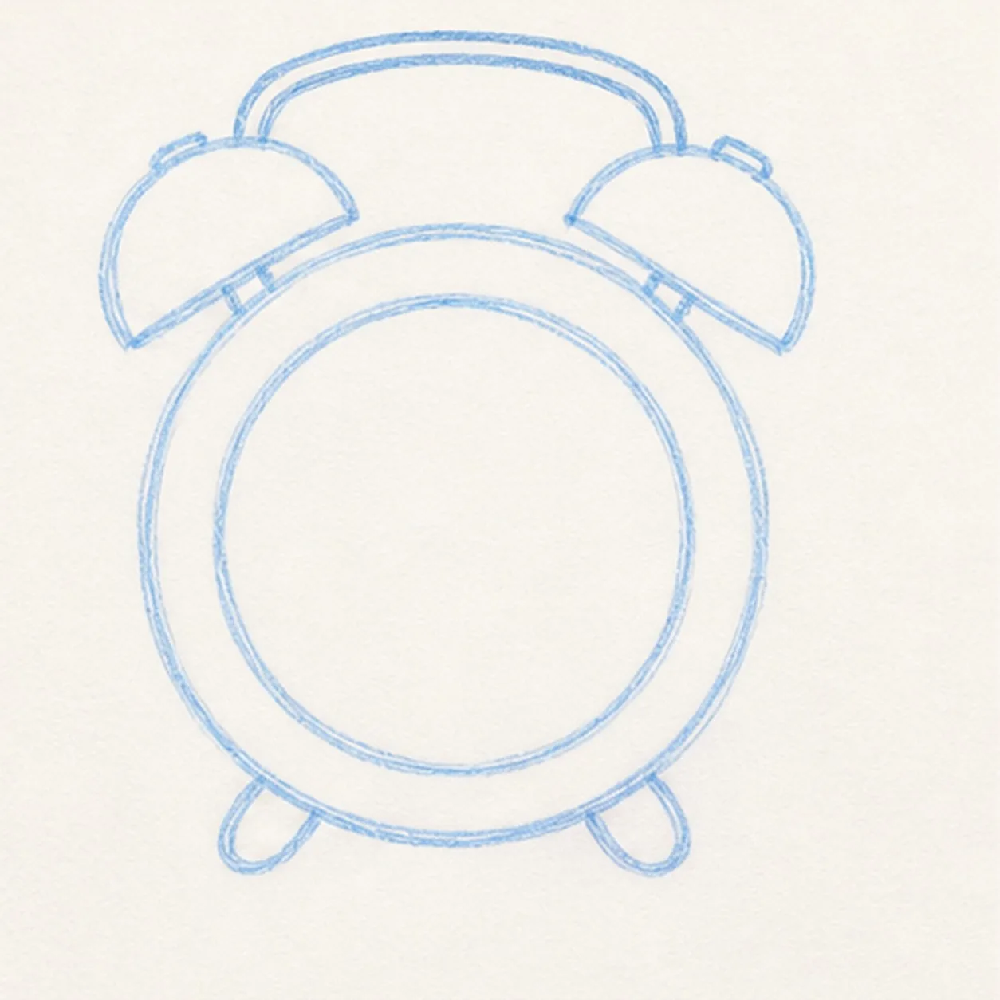
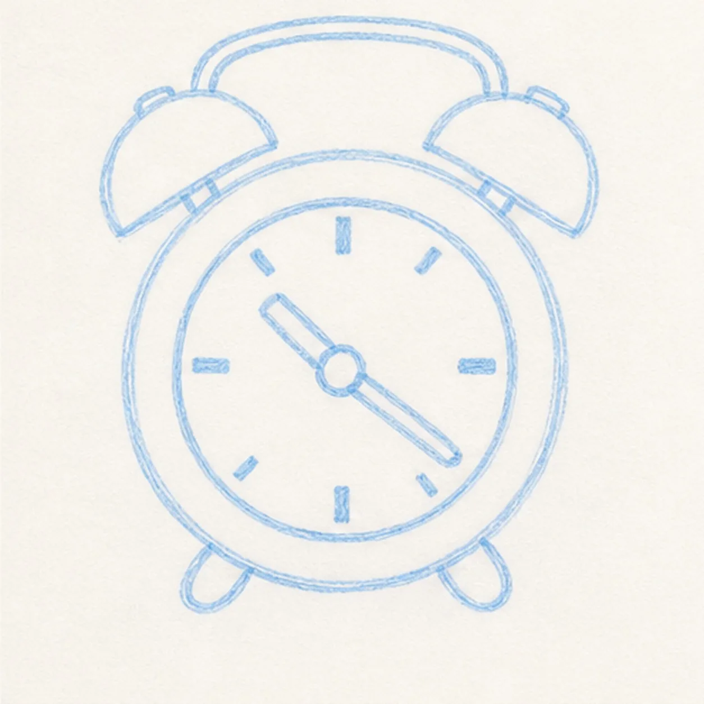
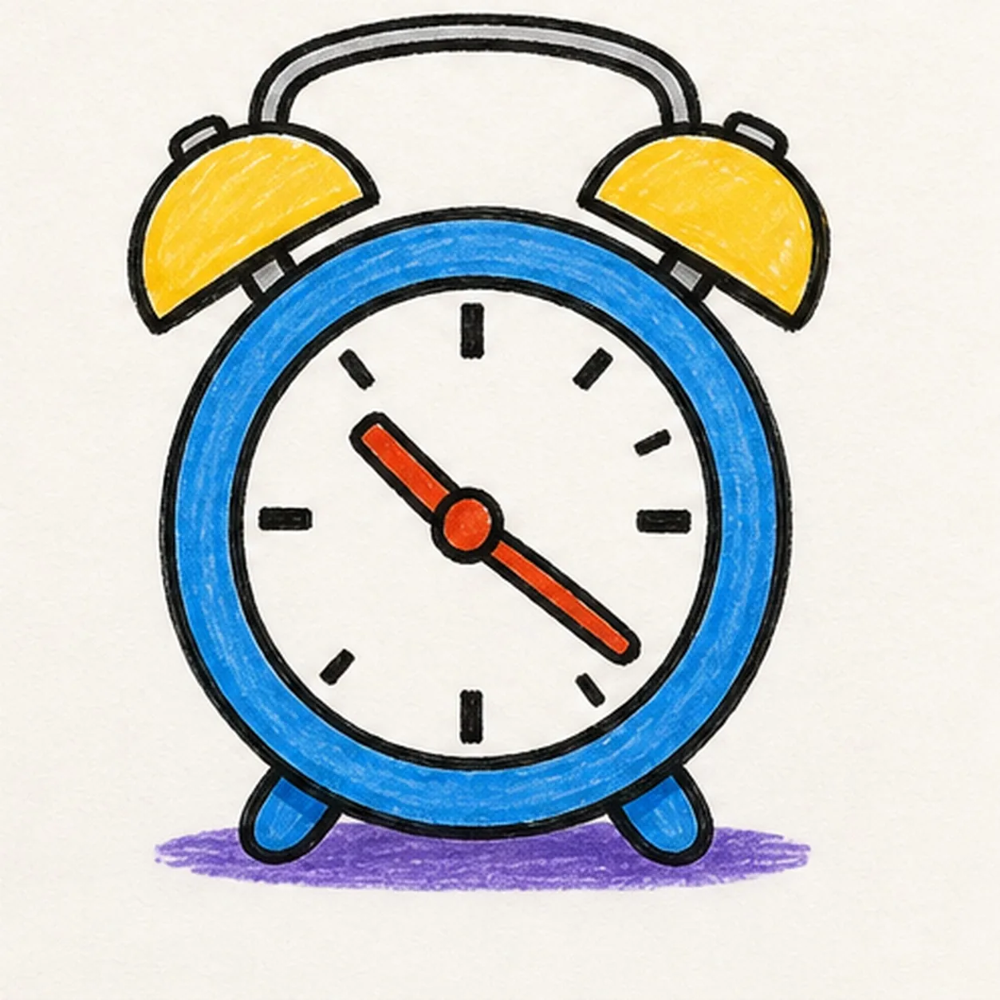

Felt-tip marker mode
Let's draw a cartoon alarm clock
Treat this as one playful practice round: sketch the idea loosely, simplify the shapes, then commit with confident marker outlines and bright fills.
-
01

Draw the clock circle
Draw a large round clock body, then add a smaller inner circle for the face.
Doodle tip: Ghost the circle twice before using marker. It can be handmade, but the ring should feel intentional.
-
02

Add the bells
Place two rounded alarm bells on top of the clock body.
Doodle tip: Leave a little gap between each bell and the face ring so the top does not turn into one heavy blob.
-
03

Set feet and handle
Add two small feet below the body and a curved handle connecting the bells.
Doodle tip: Pull the handle curve in one confident stroke. Rotating the page can make that arc smoother.
-
04

Place hands and ticks
Draw two clock hands from the center, then add chunky tick marks around the face.
Doodle tip: Skip numbers for this version. A few bold ticks stay clearer than tiny lettering.
-
05

Fill the bright parts
Fill the body blue, the bells yellow, the hands red-orange, and add a small purple shadow under the feet.
Doodle tip: Pull the blue marker strokes around the circle. Directional strokes make the ring feel round.
-
06

Wake up the clock
Thicken the black outlines, even the marker fills, clarify the bells, hands, ticks, handle, feet, and same shadow.
Doodle tip: Stop before adding a face, words, or a border. The bells, hands, color, and chunky outline give it enough energy.